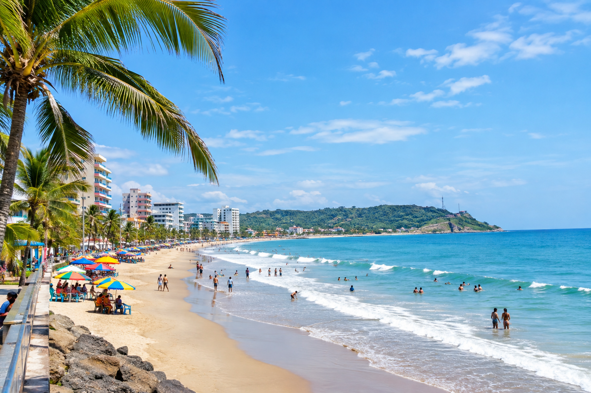

🏖️ Playa de Atacames
Una de las playas más conocidas de Esmeraldas, ideal para disfrutar del sol, el mar y un ambiente lleno de recreación.
📍 Ubicación: Atacames, Esmeraldas.
🎯 Actividades: Natación, caminatas, deportes acuáticos, gastronomía y recreación.